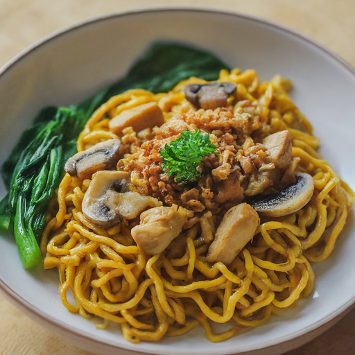

Mie Ayam Jamur Recipe

This dish is called Mie Ayam Jamur, which translates to chicken mushroom noodles. This dish consists of noodles, a mix of chicken and mushrooms that have been cooked together with different sauces, and a side of soup that is meant to be poured into the bowl and eaten together.
Ingredients:
- Chicken thigh (600g)
- Mushroom (500g)
- Shallot (2 heads)
- Garlic (2 heads)
- Green onion (2-3 stalks)
- Candlenut (blended or can be replaced with candlenut powder)
- Chicken stock (can be replaced with chicken stock powder/cubes)
- Grated ginger (can be replaced with ginger powder)
- Coriander (blended or can be replaced with coriander powder)
- Garlic powder
- Soy sauce (2 tbsp - adjust)
- Oyster sauce (2 tbsp - adjust)
- Mushroom-flavored dark soy sauce/ regular dark soy sauce (1 tbsp)
- Sweet soy sauce (1 tbsp - adjust)
- White pepper
- Salt
- Fried shallots
- Noodles (preferably egg noodles)
- Cooking oil (I used light olive oil)
- Water
Instructions:
- Cut chicken thighs into cubes, mushrooms into small pieces (I cut a mushroom into 4-6 pieces), and mince garlic and shallots.
- Turn on the stovetop to medium and grab a cooking pan that is big enough. Put in cooking oil and once hot, add the garlic and shallots and saute until fragrant.
- Add the chicken thigh and mushroom to the pan and saute for 3-5 minutes. Once cooked, add in salt, white pepper, candlenut powder, coriander powder, ginger powder, oyster sauce, soy sauce, dark soy sauce, and sweet soy sauce, and then mix.
- Bring a pot of water to a boil and cook the noodles according to the instructions on the package directions. Once cooked and drained, put the noodles in a bowl.
- Cut the green onions into small pieces. Put the white part of the green onion into the pan together with the chicken and mushroom. Save the green part of the green onion for topping to serve later.
- Add a bit of water to the pan, making sure that the water is just about ⅓ of the height of the chicken and not fully covering the chicken and mushroom. Let simmer for about 10 minutes until the liquid has reduced.
- While waiting for the liquid to reduce, bring the chicken stock to a boil in a pot and add garlic powder, candlenut powder, white pepper, and coriander powder to the stock and mix. Once mixed thoroughly, grab a ladle and pour some soup in a small bowl.
- Once the liquid has reduced, the chicken mushroom mix is ready to be served. Put this mixture on top of the cooked noodles in the bowl, along with fried shallots and the green part of the green onion that has been saved.
- Serve with the bowl of noodles with the soup that has been prepared.
Back to Home